计算机网络笔记03 运输层
3.1 概述和运输层服务
- 提供了不同主机中应用进程之间的
逻辑通信而非物理通信 - 运输层协议工作在端系统中
- 发送方：将报文封装成报文段，提交给网络层
- 接收方：解析成报文，提交给应用层
- 提供了两种协议 TCP & UDP
运输层和网络层的关系
- 从通信和信息处理的角度看，运输层向上面的应用层提供通信服务，属于面向通信部分的最高层，同时也是用户功能中的最底层。
- 网络层：主机之间的逻辑通信
- 运输层：进程之间的逻辑通信
运输层的服务
- 可靠的、有序的交付：
TCP - 面向连接的逻辑通信：握手机制
- 流控制：发送速度不能大于接收速度
- 拥塞控制：从发送端系统感知、避免网络的拥塞
- 不可靠的、无序的交付：
UDP - 不提供必要的服务
- 尽最大努力向网络交付数据
- 运输层没有提供的服务
- 最低时延保障
- 最低带宽保障
多路复用和多路分解
多路分解：将运输层报文段中的数据交付到正确的套接字
多路复用：在源主机从不同的套接字中收集数据快，并为每个数据快封装上首部信息从而生成报文段，并将报文段传递到网络层
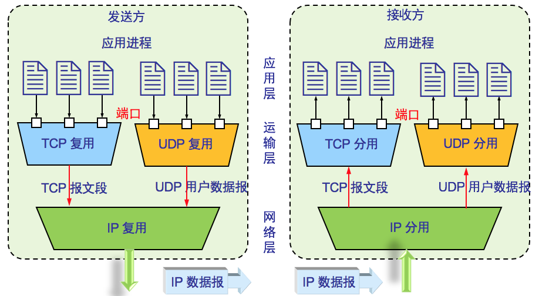端口：
使用16bit的整数来标识进程
在不同主机上，相同端口可能有不同的用途
两种类型的端口
01023 : 周知端口，用于标准协议，如FTP/HTTP/SMTP65535: 扩展端口，用于特定协议或客户端进程标识
1024套接字：
UDP套接字：目的IP地址 + 一个目的端口号
TCP套接字：源端口号 + 源主机IP地址 + 目的端口号 + 目的主机IP地址
多路分解的机制
- 主机收到IP数据报
- 数据报有源IP和目的IP
- 数据报中封装了应用报文
- 每个报文段中标识着源端口号和目的端口号
- 主机使用IP地址+端口号来定向应用进程的套接字
无连接的复用和分解
- 使用
端口号创建套接字: DatagramSocket mySocket1 = new DatagramSocket(99111); - UDP 套接字使用二元组来标识 :(dest IP address, dest port number)
- 当主机收到UDP报文:识别报文首部的目的端口号，将报文提交给该端口号对应的应用进程
- 不同主机发送过来的报文，只要目的端口号相同，都提交给相同的套接字
面向连接的复用和分解
- TCP 套接字是一个四元组，包括: source IP address, source port number, dest IP address, dest port number
- 接收端的主机通过这四个值来定位到对应的套接字
- 服务器端的应用进程可能有并发的TCP套接字：每个套接字由一个四元组来标识
- 如：Web服务器对为个连接的客户端创建不同的套接字：非持久性连接HTTP对每个请求创建一个套接字
- 不同主机发送过来的报文，即使目的端口号相同，不是都提交给相同的的套接字
3.3 无连接运输：UDP
- 不提供额外服务的运输层协议：让网络尽最大努力交付，不能解决分组失序、丢失问题
- 是一个无连接的运输协议：UDP协议的发送端和接收端没有“握手”机制，每个分组单独处理，分组互不关联
- 优点：
- 时延：没有连接(握手)的过程，减少时延
- 简单：没有连接状态管理，
- 高效：首部字段短**(8 bytes)**
- 快速：可以突发式地传输
基于UDP的应用：
- DNS：因特网目录服务，域名解析系统
- SNMP：简单网络管理协议
- 流媒体传输
- 因特网电话
基于UDP协议，如何实现可靠传输？
- 将可靠传输的机制放在
应用层 - 在
应用程序中定义差错控制的机制
UDP报文段结构
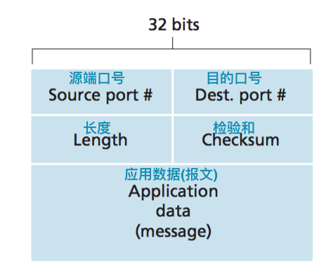- 提供差错检验: 检验和
- 没有差错控制
- 长度: 报文段的总长度
- UDP检验和的计算：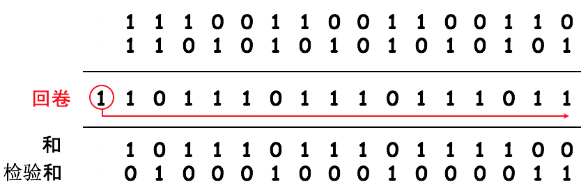
3.4 可靠传输原理
不可靠信道的特点决定了可靠服务传输的复杂性可靠数据传输：为上层实体提供的服务抽象是，数据可以通过一条可靠的信道进行传输。借助于可靠信道，传输比特就不会受到损坏或丢失。
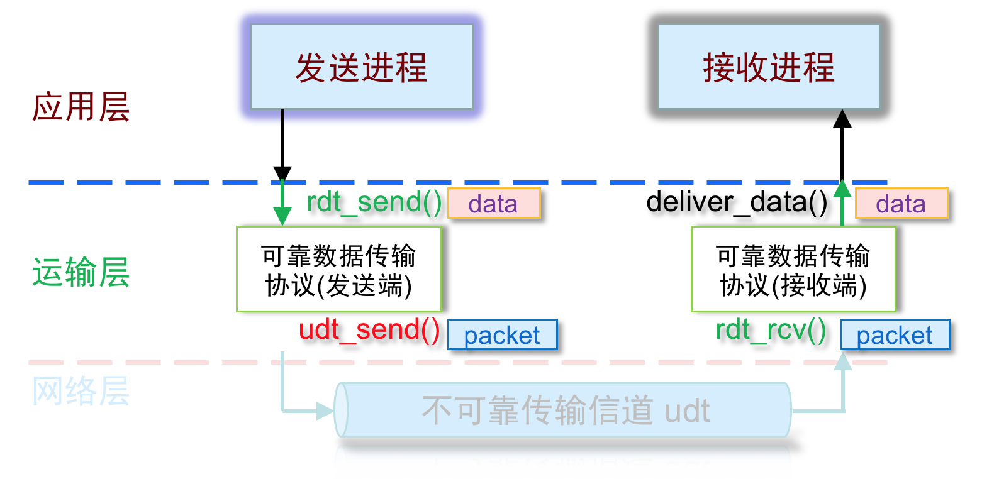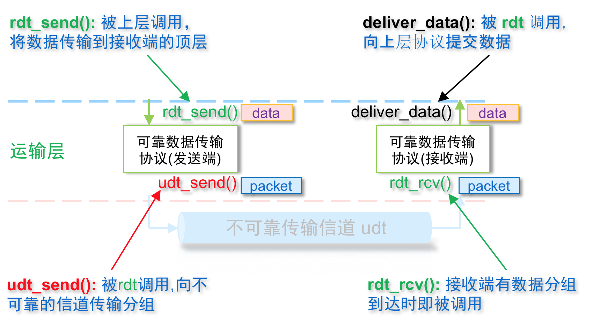
- 过程：
- 逐渐引入问题，bit差错->分组丢失……
- 发送端和接收端的协议逐渐丰富，版本演进
- 工具：
- 有限状态机(Finite State Machine, FSM)
- 分别定义发送方和接收方的状态(行为)
rdt1.0： 理想信道中的数据传输rdt2.x：处理信道中的bit差错rdt3.0：处理信道中的bit差错和分组丢失
rdt1.0：经完全可靠信道的可靠数据传输
- 前提：下层信道是可靠的。底层信道没有bit差错、分组丢失
- 发送端和接收端的有限状态机：发送端向底层信道发送数据，接收端从底层信道读取数据
rdt2.0：处理bit差错
检测bit差错？差错检测：checksum()恢复bit差错？接收方反馈：- 肯定确认：接收方告诉发送方数据分组正确到达
- 否定确认：接收方告诉发送方数据分组出错
- 重传：发送方收到否定确认后重传该分组
- rdt2.0的机制：
停止等待协议(Automatic Repeat reQuest,ARQ) - 检测：接收方检测bit差错
- 反馈：接收方发送确认消息(ACK或NAK)给发送方
rdt2.0存在的问题：当接收方的ACK/NAK信息出错时，可能导致接受方数据重复。解决办法：识别重复的数据分组rdt2.1
rdt2.1：处理“混淆的确认”——为分组编号
识别重复分组：为数据分组进行编号 - > 接收方丢弃重复分组 - > 重传肯定确认(ACK)
序号空间最小为多少？理论上1个bit就够了，因为它可让接收方知道发送方是否正在重传前一个分组。
发送端:
为分组编号：两个编号 {0,1}足矣
必须检测确认信息是否出错
状态数量翻倍(相对于rdt2.0)：在状态值中必须记录当前的数据分组号是0 还是 1。
接收端:
必须检测数据分组是否出错
必须检测数据分组是否重复，状态值暗示了期待的分组号
rdt2.1存在的问题：接收方不知道最后的确认信息是否被发送方正确收到。
rdt2.2：小改进——不要否定确认(NAK)的协议
- 和rdt2.1的功能相同
- 只使用肯定确认(ACK)，对ACK进行编号{0,1}足矣
- 发送方收到重复编号的ACK等同于收到NAK，此时发送方将重传分组
rdt3.0：处理信道中的bit差错和分组丢失
- 差错控制：检测、确认、重传
- 处理分组丢失(如何让发送方认识到分组丢失了？)：
- 基于时间的重传机制：发送端设置“ 定时器 ” timer ，超时重发
- 接收方仍然会收到重复分组：rdt2.2通过对分组编号能够处理冗余分组的情况
停止等待 - >流水线可靠数据传输协议
rdt3.0是一个停等协议，效率较低。
eg. 对于1Gbps的链路，有15ms的端到端时延，传输一个1KB的数据分组，链路的利用率有多少？吞吐率是多少？
- 传输时延 = L/R = 8 kbit ÷ 109 bit/s =8 μs
- 利用率=传输时延 / (往返时延+传输时延)
=传输时延/(2 * 端到端时延+传输时延)
=0.008÷(2 * 15+0.008)
=0.00027 - 意味着：每30ms传输1KB的数据，在1G的链路上只有33kB的吞吐量
流水线：发送方发送一个数据分组之后，在对方确认之前，可以继续发其他分组。
成倍地提高网络的通信效率
但需要考虑流水线中如何实现差错控制(分组丢失、损坏或延时后如何重传？)
- 必须增加序号范围
- 协议的发送方和接收方两端可能需要缓存多个分组(以备重传)
- 所需序号范围和对缓存的要求取决于数据传输协议如何处理丢失、损坏及延时过大的分组。
回退N步(GBN)/滑动窗口协议
发送方：
- 允许发送方发送多个分组，而不需等待确认
- 未确认的分组数 < N (窗口长度)
- 发送方的缓存容量是有限度的
- 不能让发送方“肆无忌惮”地发数据，否则跟UDP没太大区别
流控制的需要：发送速率不能大于接收速率拥塞控制的需要：不要擅自给网络添堵- 发送方设置
定时器：用于处理丢失重传问题 - 定时器数目多多益善，但注意定时器也耗费资源!
接收方：
- 接收方没有缓存(降低成本)
- 只接收有序的分组(向上提交)，会丢弃失序的分组
- 接收方确认分组：
分组丢失—数据失序接收方丢弃失序分组确认丢失—累积确认ack3 ：小于等于序号3的分组都被确认收到分组出错—重复确认接收方重复确认，发送方可在超时之前就重传
滑动窗口(slide window)：窗口长度是固定的：N
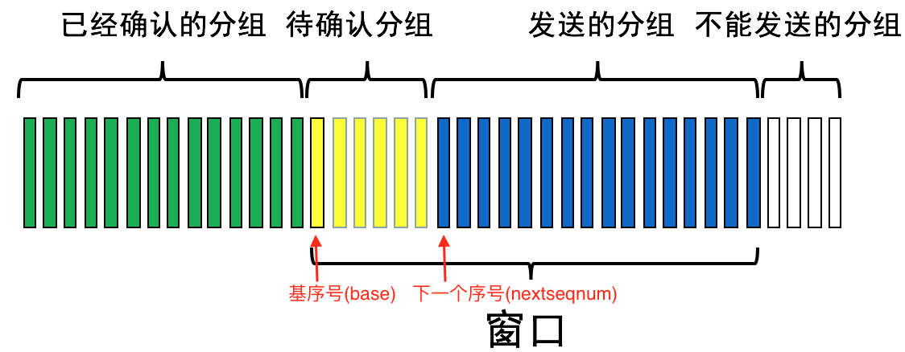
选择重传SR
发送方：
- 发送方有缓存(滑动窗口)
- 允许发送方发送多个分组，而不需等待确认
- 发送方有选择地重传：哪个分组的ack没收到，就重传那个分组
接收方：
- 接收方有缓存(滑动窗口)
- 分组失序：把分组缓存，向上层有序提交分组
- 接收方确认分组：
分组丢失—数据失序接收方：缓存失序分组，逐个确认正确收到的分组确认丢失—超时事件发送方重传分组出错—重复确认接收方重复确认，发送方可在超时之前就重传(果断处之)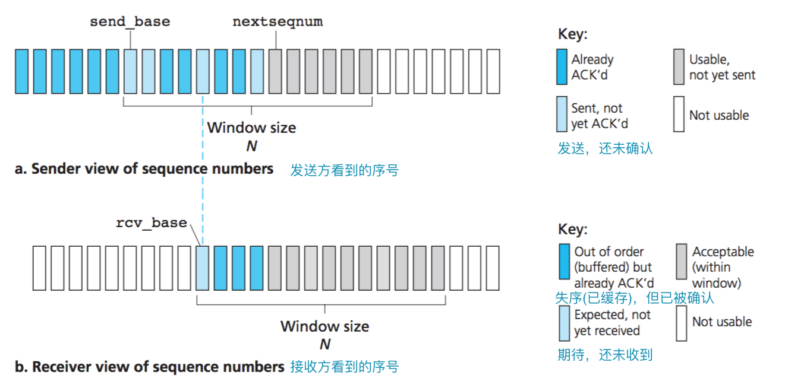
实现可靠传输的基础构件
- 检验和
- 定时器
- 序号: 序号空间
- 确认: 确认序号/累积确认/重复确认/逐一确认(/否定确认）
- 窗口、流水线：窗口尺寸N、窗口变量：base， nextsqnum
3.5 面向连接的运输：TCP
TCP协议概述
- 因特网中最复杂的协议之一
- 端到端协议：一个发送方，一个接收方(不会广播)
- 可靠传输：
- 有序的字节流传输：无损坏、无间隔、非冗余、按序交付。(差错检验、重传、累积确认、定时器、序号、确认号)
- 流水线协议：提供流控制和拥塞控制
- TCP是全双工协议
- 在一个TCP连接中，数据流是双向的，发送方/接收方 可以发送数据，也可以接收数据
- MSS最大报文段长度：实际指报文段应用层数据的最大长度，不包括TCP首部长度。
- TCP是面向连接的协议
- 通过“握手”(交换控制信息)，初始化发送方和接收方的状态
- 连接状态完全保留在两个端系统中，TCP协议只在端系统中运行。中间的网络元素不会维持TCP的连接状态。P155
- TCP可实现流控制
- 发送方的发送速度不能超过接收方的接收速度
TCP可靠运输
TCP的序号、确认号
- 序号空间：[0—232]
- 序号规则：
- 面向字节流编序号：报文段的编号是该报文段数据中第一个字节的编号
Seq(i+1) == Seq(i) + Lsegment(i) - 不是对报文段编号
确认号ACK：期望的下一个报文段- ACK(0) == 0
- ACK(i) == Seq(i)+ 1
TCP的确认和重传机制
- 流水线协议
- GBN和SR的混合体
- 此外，接收端也有定时器
| 事件 | TCP接收方的动作 | |
|---|---|---|
| 延迟确认 | 期望序号的报文段按序到达，之前的报文段都已经被确认 | 延迟500ms确认新到的分组(为累积确认做准备) |
| 累积确认 | 期望序号的报文段按序到达，另一个按序报文等待确认 | 立即发送单个累积确认，确认两个按序报文段 |
| 冗余确认 | 比期望序号大的报文段到达。检测出间隔 | 立即发送冗余确认(重复确认)，指示下一个期待字节的序号 |
| 立即确认 | 失序后最低望序号的报文段到达 | 立即发送确认(不延迟500ms) |
| 快速重传 | 发送方收到3个冗余确认 | 超时之前重发报文段，避免无谓的等待 |
| 加倍超时 | 发送方产生一次超时重传 | 发送方加倍超时间隔。是一种有限形式的拥塞控制 |
累积确认还可以解决确认丢失的问题: 发送方不会重传分组
往返时间估计
TCP往返时间估计是为了解决TCP协议的发送方如何设置定时器的时间间隔的问题。超时时间间隔应大于RTT(往返时间)，但由于路由器的拥塞和端系统负载的变化，RTT总是在波动。
- 超时时间间隔过小：累积确认到达之前，会产生不必要的重传！
- 超时时间间隔过大：对分组丢失的反映迟钝，降低了传输效率。累积确认、快速重传可以解决一些问题，但还是需要充分估计RTT。
估计RTT
SampleRTT:某个报文段被发出，到收到确认的时间间隔。
TCP仅在某个时刻做一次SampleRTT测量，SampleRTT的值也会波动。因此需要统计学意义上的测量和估计
指数加权移动平均(EWMA) EstimatedRTT = ( 1 - α ) * EstimatedRTT + α * SampleRTTRFC 6298: α = 0.125
估计RTT偏差 DevRTT = ( 1 - β ) * DevRTT + β * | SampleRTT - EstimatedRTT |RFC 6298: β = 0.25
设置超时时间间隔 TimeoutInterval = EstimatedRTT + 4 * DevRTT
TCP报文段结构
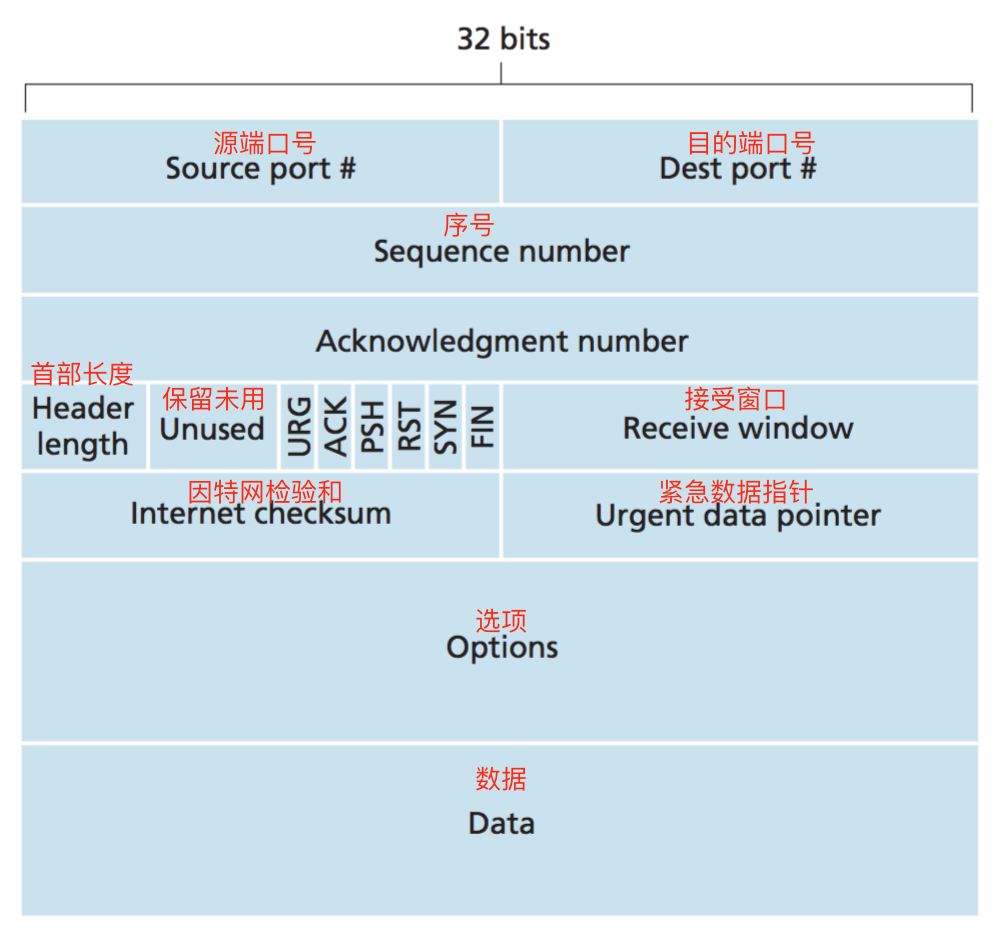- 源端口和目的端口(各占 2 字节)：是运输层与应用层的服务接口，实现对运输层的复用和分解。
- 序号(4 字节)：TCP 连接中传送的数据流中的每一个字节都编上一个序号。序号字段的值则指的是本报文段所发送的数据的第一个字节的序号。
- 确认号(4 字节)：是期望收到对方的下一个报文段的数据的第一个字节的序号。
- 数据偏移/首部长度( 4 bit )：指示了以32 bit(4 字节为计算单位)的字为单位的TCP首部长度。若无选项字段，TCP长度固定为20字节。
- 保留字段( 6 bit )：保留为今后使用，目前均置为 0。
- 6个比特位
URG紧急比特位( 1 bit )：当 URG 为1时，告诉系统此报文段中有紧急数据，应尽快传送(相当于高优先级的数据)。ACK确认比特位( 1 bit )：只有当 ACK = 1 时确认号字段才有效。当 ACK = 0 时，确认号无效。PSH推送比特位( 1 bit )：接收推送比特位置 1 的报文段，接收方就应立即将数据交给上层，而不需缓存该报文段。RST复位比特位( 1 bit )：当 RST = 1 时，表明 TCP 连接中出现严重差错（如由于主机崩溃或其他原因），必须释放连接，然后再重新建立运输连接。SYN同步比特位( 1 bit )：同步比特 SYN = 1，就表示这是一个连接请求或确认连接的报文段。FIN终止比特位( 1 bit )：用来释放一个连接。当FIN = 1 时，表明此报文段的发送端的数据已发送完毕，并要求释放运输连接。- 接收窗口( 2 字节 )：用于流量控制。TCP 连接的一端根据设置的缓存空间大小确定自己的接收窗口大小，然后通知对方以确定对方的发送窗口的上限
- 检验和( 2 字节 )：检验和字段检验的范围包括首部和数据这两部分。在计算检验和时，要在 TCP 报文段的前面加上 12 字节的伪首部。
- 紧急指针( 2 字节 )：紧急指针指出在本报文段中的紧急数据的最后一个字节的序号。
- 选项字段( 长度可变 )：目前只规定了一种选项，即最大报文段长度 MSS ；告诉对方 TCP“我的缓存所能接收的报文段的数据字段的最大长度是 MSS 个字节。”
- 填充字段( 长度可变 )：使整个首部长度是 4 字节的整数倍。
TCP流量控制
- 目标：速度匹配 - > 发送速度不能大于接收速度
- 原因：接收方的缓存空间有限，接收方提交数据的速度有限
- 机制：
- 接收窗口：接收缓存中的剩余空间
- 接收方在向发送方确认时，随时告诉对方自己接收窗口的大小
TCP连接管理
TCP是“面向连接”的运输协议
- 运输之前，要先建立“逻辑连接”
- 初始化TCP的参数：序号、缓存
- 客户端发起连接：Socket clientSocket = new Socket(“hostname”, “port#”);
- 服务器端等待连接：Socket connectionSocket = welcomeSocket.accept();
- 通过三次握手建立连接 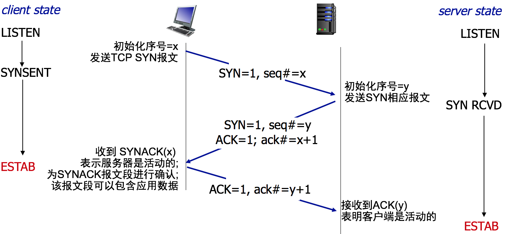
- 关闭连接 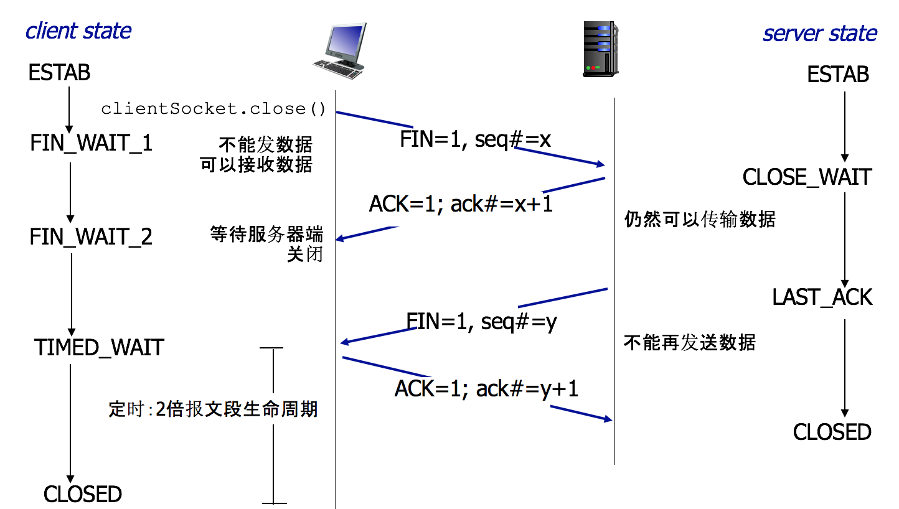
3.6 拥塞控制原理
网络拥塞
- 通俗地讲：由于过多的端点高速发送大量的数据，导致网络(路由器)难以胜任数据的转发
- 不同于流控制是匹配发送端和接收端的速度
- 拥塞的表现：分组重传作为网络拥塞的征兆
- 数据分组的丢失(路由器的缓存溢出)
- 产生较长的时延(在路由器缓存排队)
- 拥塞控制是网络中的关键问题
通过对异步传递方式(ATM)网络中可用比特率(ABR)服务中的拥塞控制的讨论来总结本节
拥塞情况1: 两个发送方和一台具有无限缓存的路由器
- 链路的带宽：R
- 没有重传、流控制和拥塞控制
拥塞情况2:两个发送方和一台具有有限缓存的路由器
- 链路的带宽：R
- 有分组重传控制:
应用层：(初始数据)λin = (吞吐率)λout
运输层：(供给载荷)λ´in ≥ λin (λ´in包括了重传的数据分组)
拥塞情况3 ：四发送方和一台具有有限缓存的多台路由器和多条路径
新的拥塞代价: 一个路由器将分组丢失，这个路径上先前的路由器也做了无用功
| 理想情况 | 拥塞情况1 | 拥塞情况2 |
|---|---|---|
| 发送方”神知”路由器是否有可用缓存空间 | 路由器缓存溢出，丢失分组 | 路由器缓存中出现转发队列 |
| 只在路由器有缓存空间的情况下才发数据 | 发送方只在分组丢失的情况下重传 | 发送方产生超时事件 |
| 结果：不会丢失分组 λ´in = λ in | 代价：发送方会重传丢失的分组 λ´in > λin | 代价：发送方会重传延时的分组 λ´in > λin |
吞吐量、时延与主机发送速率的函数关系
拥塞控制的方法
- 端到端拥塞控制:
- 网络层不提供显式拥塞反馈
- 端点通过超时和冗余确认来感知是否发生了拥塞
- 工作在运输层：通过TCP实现拥塞控制
- 网络辅助的拥塞控制:
- 路由器会告知端点产生了拥塞
- 使用特殊的分组来告知阻塞
- 工作在链路层
3.7 TCP拥塞控制
- 发送方感知网络的拥塞程度，来限制发送速度
- 感知网络拥塞：发送方产生超时事件 / 收到接收方的3个冗余确认
- 控制拥塞：发送方设计一个动态调节的“阀门”——拥塞窗口
拥塞窗口(cwnd)
- 发送端的一个动态参数，用于控制发送速度，初始值为1MSS(最大报文段长度)
- 拥塞窗口的工作机制
- 限制向网络中传输的数据: LastByteSent-LastByteAcked ≤ cwnd
- TCP传输速率也是动态的
粗略地估计，在一个RTT内可以传输cwnd个字节: rate ≈ cwnd / RTT bytes/sec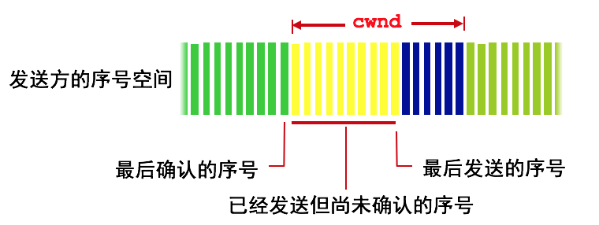
拥塞窗口的动态调节策略
- 在拥塞产生之前，保守地增加拥塞窗口的大小
`加性增`: 每次增加1MSS个字节，直到检测到丢包事件- 在感知到拥塞后，迅速地减小拥塞窗口的大小
乘性减: 发生丢包事件后，拥塞窗口马上缩小一半
TCP拥塞控制算法
缓慢启动
- 连接开始，速率翻倍提高，直到发生第一个丢包事件
- 拥塞窗口初始值为1MSS
- 每经历1RTT，拥塞窗口翻倍(*2)
- 收到ACK后便进行更新
- 初始速度很低，然后指数增长
- 产生超时事件：拥塞窗口重设为1MSS，重新慢启动
- 收到3个冗余确认：拥塞窗口减半，然后线性增长
拥塞避免(提前采取措施)
- 设定一个门限(阈yù值)
- 拥塞窗口达到门限值后，进入加性增长：每次增加1MSS
- 产生丢包事件后，收缩窗口、阈值
- 阈值：缩减为拥塞窗口的一半
- 超时：拥塞窗口重新进入慢启动
- 三个冗余ACK：拥塞窗口从新的阈值开始加性增加
快速恢复：TCP的可选功能。TCP Tahoe：没有快速恢复，TCP Reno：综合了快速恢复
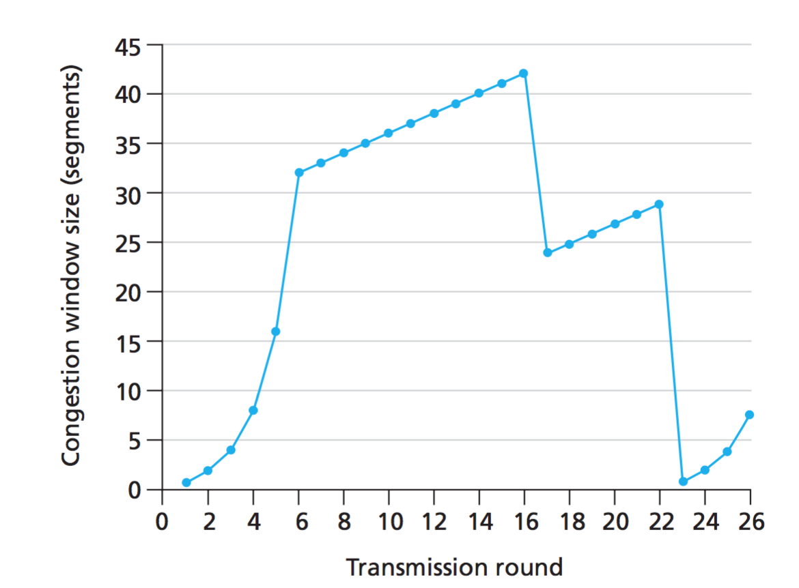TCP拥塞控制算法(慢启动、拥塞避免和快速恢复)的完整FSM描述
TCP吞吐量的宏观描述
平均吞吐量是拥塞窗口和RTT的函数：
设W为丢包事件产生后的拥塞窗口大小，平均窗口大小约 3/4 W，平均吞吐量为3/4W per RTT
一条连接的平均吞吐量 = 0.75 * W / RTT
经高带宽路径的TCP吞吐量
网格和云计算需要高速的链路和吞吐量
eg. 1500Bytes报文段, 100ms RTT, 为了获得10 Gbps的吞吐率
设平均拥塞窗口W = 83,333Bytes
考虑到丢包情况的吞吐率, 设丢包率为L [Mathis 1997]:
一条连接的平均吞吐量 =
为了达到10Gbps的吞吐量，丢包率要非常低，小于L = 2·10-10!
针对高速的TCP设计，目前还在不断演化中
TCP的公平性
- 公平性的目标：
- 如果 K个TCP连接共享一个带宽为R的链路
- 每个TCP连接拥有的平均传输率为 R/K
- eg.设有两个相互竞争的连接，公平性的体现：两条连接实现的带宽最终将沿着平等带宽的共享曲线波动。它们最终会收敛该状态。
- 公平性和UPD、公平性和并行TCP连接